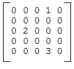
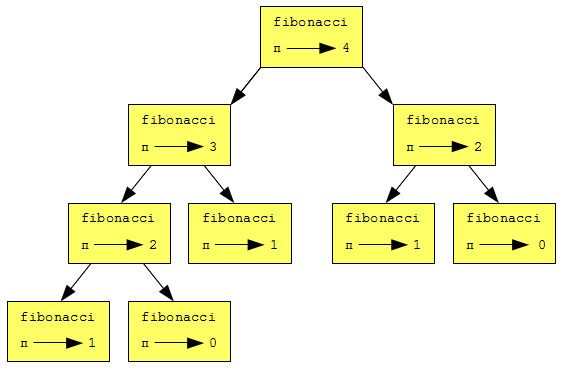

Все изученные нами до сих пор составные типы данных — строки, списки и кортежи — это последовательности, использующие целые числа как индексы для доступа к их отдельным элементам.
Словарь (англ.: dictionary) — составной тип, отличающийся от последовательностей, и относящийся к встроенному типу Python отображение. Словари отображают ключи, которые могут быть любого из неизменяемых типов, на значения, которые могут быль любого типа, так же как значения элементов списка или кортежа.
В качестве примера, создадим словарь для перевода английских слов на испанский. В этом словаре ключами будут строки.
Один из способов создать словарь — это начать с пустого словаря и добавить в него нужные пары ключ-значение. Пустой словарь обозначается {}:
>>> eng2sp = {}
>>> type(eng2sp)
<type 'dict'>
>>> eng2sp['one'] = 'uno'
>>> eng2sp['two'] = 'dos'
Первое предложение присваивания создает словарь с именем eng2sp. далее мы просим Python сообщить нам тип созданного объекта. Два следующих предложения присваивания добавляют в словарь пары ключ-значение. Можно напечатать текущее значение словаря уже привычным нам способом:
>>> print eng2sp
{'two': 'dos', 'one': 'uno'}
Пары ключ-значение в словаре разделены запятыми. Каждая пара содержит разделенные двоеточием ключ и значение.
Пары в словаре могут оказаться не в том порядке, как вы ожидали. Python использует сложный алгоритм, чтобы определить, где в словаре хранить каждую пару ключ-значение. Мы же просто можем считать, что пары в словаре хранятся в случайном порядке.
Другой способ создать словарь — сразу задать список пар ключ-значение, воспользовавшись тем же синтаксисом, что мы видим при выводе словаря:
>>> eng2sp = {'one': 'uno', 'two': 'dos', 'three': 'tres'}
Не имеет значения, в каком порядке мы записываем пары. Значения извлекаются из словаря по ключу, а не по индексу, так что заботиться об упорядочении пар не нужно.
Вот как получают значение с помощью ключа:
>>> print eng2sp['two']
'dos'
Ключу 'two' соответствует значение 'dos'.
Предложение del удаляет из словаря пару ключ-значение. Например, следующий словарь содержит названия различных фруктов и их количество на складе:
>>> inventory = {'apples': 430, 'bananas': 312, 'oranges': 525, 'pears': 217}
>>> print inventory
{'oranges': 525, 'apples': 430, 'pears': 217, 'bananas': 312}
Если кто-то купит все груши (англ.: pears), то можно удалить соответствующую пару из словаря:
>>> del inventory['pears']
>>> print inventory
{'oranges': 525, 'apples': 430, 'bananas': 312}
А если мы ожидаем, что вскоре запас груш пополнится, можно просто изменить значение для ключа ‘pears’:
>>> inventory['pears'] = 0
>>> print inventory
{'oranges': 525, 'apples': 430, 'pears': 0, 'bananas': 312}
Функция len также работает для словарей; она возвращает количество пар ключ-значение в словаре:
>>> len(inventory)
4
Словари имеют много полезных встроенных методов.
Метод keys (англ.: ключи) возвращает список ключей словаря.
>>> eng2sp.keys()
['three', 'two', 'one']
Как и ранее со строками и списками, вызов словарных методов использует точечную нотацию, где слева от точки помещается имя объекта, а справа — имя метода, вызываемого для этого объекта. Пустые скобки показывают, что этот метод не имеет параметров.
В данном случае можно сказать, что метод keys вызван для объекта eng2sp. Как мы увидим далее в главах об объектно-ориентированном программировании, объект, для которого вызывается метод, — на самом деле первый аргумент при вызове этого метода.
Метод values (англ.: значения) подобен методу keys, он возвращает список значений словаря:
>>> eng2sp.values()
['tres', 'dos', 'uno']
Метод items (англ.: пункты, статьи) возвращает ключи и значения в виде списка кортежей, по одному кортежу для каждой пары ключ-значение:
>>> eng2sp.items()
[('three', 'tres'), ('two', 'dos'), ('one', 'uno')]
Метод has_key берет ключ в качестве аргумента и возвращает True, если ключ имеется в словаре, и False в противном случае:
>>> eng2sp.has_key('one')
True
>>> eng2sp.has_key('deux')
False
Этот метод может быть очень полезен, так как попытка получить значение из словаря по несуществующему ключу вызывает ошибку выполнения:
>>> eng2esp['dog']
Traceback (most recent call last):
File "", line 1, in
KeyError: 'dog'
>>>
Поскольку словари изменяемы, вам следует помнить об альтернативных именах. Когда две переменные ссылаются на один и тот же объект, изменения, сделанные для одной переменной, влияют на другую.
Если необходимо изменить словарь и при этом сохранить оригинал, воспользуйтесь методом copy. Например, словарь opposites (англ.: противоположности) содержит пары противоположностей:
>>> opposites = {'up': 'down', 'right': 'wrong', 'true': 'false'}
>>> alias = opposites
>>> copy = opposites.copy()
alias и opposites указывают на один и тот же объект, тогда как copy указывает на копию словаря. Если изменить alias, то opposites тоже изменится:
>>> alias['right'] = 'left'
>>> opposites['right']
'left'
Если же изменить copy, opposites не изменится:
>>> copy['right'] = 'privilege'
>>> opposites['right']
'left'
Ранее мы использовали список списков для того, чтобы представить матрицу. Это хороший подход для матриц, в которых большинство значений ненулевые, но посмотрите на разреженную матрицу, такую как эта:
Списочное представление матрицы хранит много нулей:
matrix = [[0, 0, 0, 1, 0],
[0, 0, 0, 0, 0],
[0, 2, 0, 0, 0],
[0, 0, 0, 0, 0],
[0, 0, 0, 3, 0]]
Альтернативой является использование словаря. В качестве ключа можно использовать кортеж с номерами строки и столбца. Вот словарное представление этой же матрицы:
matrix = {(0, 3): 1, (2, 1): 2, (4, 3): 3}
Нам нужны только три пары ключ-значение, одна для каждого ненулевого элемента матрицы. Ключи — кортежи, а значения — целые числа.
Для доступа к элементу матрицы можно использовать оператор []:
matrix[(0, 3)]
1
Заметьте, что синтаксис словарного представления не такой, как синтаксис представления с помощью вложенных списков. Вместо двух целочисленных индексов, теперь для доступа к элементу матрицы мы используем один ключ — кортеж из двух целых чисел.
Но есть одна проблема. Если мы захотим получить нулевой элемент, то получим ошибку, поскольку в словаре нет пар для нулевых элементов матрицы:
>>> matrix[(1, 3)]
KeyError: (1, 3)
Эту проблему решает метод get:
>>> matrix.get((0, 3), 0)
1
В качестве первого аргумента указывается ключ; второй аргумент — значение, которое вернет метод get в случае, если ключ отсутствует в словаре:
>>> matrix.get((1, 3), 0)
0
Метод get определенно улучшает доступ к элементам разреженной матрицы.
Если вы поиграли с функцией fibonacci из последней главы, то вы, должно быть, заметили, что чем большее число вы указываете в качестве аргумента, тем большее время требуется функции для выполнения. Более того, время выполнения возрастает очень быстро. На одном из наших компьютеров fibonacci(20) выполняется мгновенно, fibonacci(30) занимает около секунды, а fibonacci(40) выполняется едва ли не бесконечно.
Чтобы понять, почему, давайте рассмотрим следующий граф вызовов для fibonacci с n = 4:
Граф вызовов содержит прямоугольники функций и направленные линии, соединяющие каждый прямоугольник с прямоугольниками функций, которые он вызывает. Вверху рисунка, fibonacci с n = 4 вызывает fibonacci с n = 3 и n = 2. В свою очередь, fibonacci с n = 3 вызывает fibonacci с n = 2 и n = 1. И так далее.
Посчитайте, сколько раз вызываются fibonacci(0) и fibonacci(1). Данное решение неэффективно, и оно работает тем хуже, чем большим становится аргумент.
Хорошим решением может быть сохранение однажды вычисленных значений в словаре. Прием, предусматривающий сохранение вычисленных или извлеченных данных в месте, откуда их легко получить, называется кэшированием данных, а само место хранения этих данных — кэшем. Вот вариант fibonacci, использующий словарь в качестве кэша:
previous = {0: 0, 1: 1}
def fibonacci(n):
if previous.has_key(n):
return previous[n]
else:
new_value = fibonacci(n-1) + fibonacci(n-2)
previous[n] = new_value
return new_value
Словарь с именем previous отслеживает числа Фибоначчи, которые мы уже знаем. Начинаем всего с двух пар: 0 отображается на 1; и 1 отображается на 1.
При каждом вызове fibonacci проверяет, не содержит ли уже словарь нужный результат. Если да, то функция немедленно возвращает результат, не выполняя рекурсивных вызовов. Если нет, то придется вычислить новое значение. Новое значение добавляется в словарь, прежде чем функция возвращает его.
Эта версия fibonacci на наших компьютерах вычисляет fibonacci(100) в мгновенье ока.
>>> fibonacci(100)
354224848179261915075L
L в конце числа показывает, что это число имеет тип long (англ.: длинный).
Python предоставляет тип long, который может справиться с целым числом любого размера. Ограничением будет только размер памяти вашего компьютера.
Есть три способа создать значение типа long. Первый — вычислить арифметическое выражение, результат которого слишком большой, чтобы поместиться в int. Мы уже видели это в примере fibonacci(100) выше. Другой способ — записать число с большой буквой L в конце:
>>> type(1L)
Третий — вызвать long() со значением, которое нужно преобразовать в long. Вызов long может преобразовывать значения int, float и даже строки цифр в длинные целые:
>>> long(7)
7L
>>> long(3.9)
3L
>>> long('59')
59L
В главе 7 мы написали функцию, подсчитывающую количество вхождений некоторой буквы в строку. Теперь поставим такую задачу: сформировать гистограмму для букв в строке, то есть, показать, сколько раз в строке встречается каждая буква.
Такая гистограмма может быть полезна для сжатия текстового файла. Поскольку разные буквы встречаются в тексте с разной частотой, можно сжать файл, используя более короткие коды для часто встречающихся букв и более длинные — для букв, которые встречаются реже.
Словари позволяют элегантно построить гистограмму:
>>> letter_counts = {}
>>> for letter in "Mississippi":
... letter_counts[letter] = letter_counts.get(letter, 0) + 1
...
>>> letter_counts
{'M': 1, 's': 4, 'p': 2, 'i': 4}
Мы начинаем с пустого словаря. Для каждой буквы в строке, мы отыскиваем в словаре, сколько раз эта буква уже нам встретилась (возможно, 0), и увеличиваем это значение на 1. В конце словарь содержит пары буква - количество вхождений.
Было бы красивее отобразить гистограмму в алфавитном порядке. Можно сделать это с помощью методов items и sort:
>>> letter_items = letter_counts.items()
>>> letter_items.sort()
>>> print letter_items
[('M', 1), ('i', 4), ('p', 2), ('s', 4)]
Напишите программу, которая читает строку из командной строки и возвращает таблицу букв алфавита, встречающихся в строке, в алфавитном порядке, вместе с количеством вхождений каждой буквы. Регистр букв следует игнорировать. Пробный запуск программы выглядит так:
$ python letter_counts.py "ThiS is String with Upper and lower case Letters."
a 2
c 1
d 1
e 5
g 1
h 2
i 4
l 2
n 2
o 1
p 2
r 4
s 5
t 5
u 1
w 2
$
Посмотрите, как реагирует Python на каждый из следующих фрагментов кода, введенных в интерактивном режиме:
>>> d = {'apples': 15, 'bananas': 35, 'grapes': 12}
>>> d['banana']
>>> d['oranges'] = 20
>>> len(d)
>>> d.has_key('grapes')
>>> d['pears']
>>> d.get('pears', 0)
>>> fruits = d.keys()
>>> fruits.sort()
>>> print fruits
>>> del d['apples']
>>> d.has_key('apples')
Убедитесь, что вы понимаете, что и почему происходит в каждом случае. После этого примените новые знания в теле функции ниже:
def add_fruit(inventory, fruit, quantity=0):
"""
Adds quantity of fruit to inventory.
>>> new_inventory = {}
>>> add_fruit(new_inventory, 'strawberries', 10)
>>> new_inventory.has_key('strawberries')
True
>>> new_inventory['strawberries']
10
>>> add_fruit(new_inventory, 'strawberries', 25)
>>> new_inventory['strawberries']
"""
Ваше решение должно пройти доктест.
Напишите программу alice_words.py, которая создает текстовый файл с именем alice_words.txt, содержащий упорядоченный по алфавиту список всех слов, найденных в файле alice_in_wonderland.txt (англ.: Алиса в стране чудес), вместе с количеством вхождений каждого слова. Первые десять строк файла должны выглядеть так:
Word Count
=======================
a 631
a-piece 1
abide 1
able 1
about 94
above 3
absence 1
absurd 2
Сколько раз встречается в книге слово alice?
Какое слово самое длинное в ‘Алисе в стране чудес’? Сколько в нем букв?